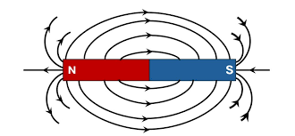
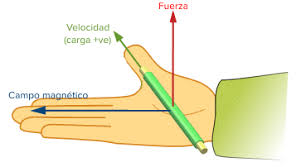
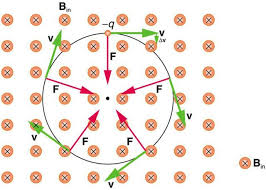
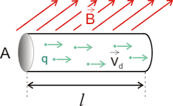
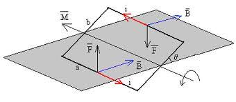
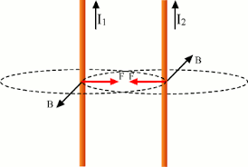

Temas de Magnetismo
Campo Magnético
El campo magnético es una región del espacio donde se ejercen fuerzas magnéticas sobre cargas eléctricas en movimiento. Estas fuerzas son el resultado de la interacción con partículas cargadas o imanes. El campo magnético se representa por el vector \( \vec{B} \) y su unidad en el Sistema Internacional es el tesla (T).
Visualmente, se representa mediante líneas de campo que van del polo norte al sur de un imán. Cuanto más juntas están estas líneas, mayor es la intensidad del campo.
Fuerza Magnética
Una carga eléctrica en movimiento dentro de un campo magnético experimenta una fuerza conocida como fuerza de Lorentz, la cual es perpendicular tanto a la velocidad de la partícula como al campo:
Donde:
- \( q \) es la carga eléctrica
- \( \vec{v} \) es el vector velocidad
- \( \vec{B} \) es el campo magnético
Esta fuerza no modifica la energía cinética de la partícula, solo cambia su dirección.
Movimiento de Partículas Cargadas
Cuando una partícula con carga entra perpendicularmente a un campo magnético uniforme, describe una trayectoria circular, ya que la fuerza magnética actúa como fuerza centrípeta. El radio de esta trayectoria es:
Este tipo de movimiento es clave en dispositivos como los ciclotrones y en el confinamiento de plasma.
Fuerza sobre un Conductor
Cuando un conductor recto transporta corriente y se encuentra dentro de un campo magnético, se genera una fuerza sobre él. Esta fuerza es el resultado del efecto acumulado de la fuerza magnética sobre cada electrón en movimiento dentro del conductor:
Es el principio de funcionamiento de los motores eléctricos.
Momento de Torsión sobre un Lazo
Un lazo de corriente en un campo magnético experimenta un par de torsión que tiende a alinear el lazo con el campo. Esto es importante en galvanómetros y motores:
Donde el momento magnético \( \vec{\mu} = I A \hat{n} \) y \( A \) es el área del lazo.
Ley de Biot-Savart

Permite calcular el campo magnético generado por un segmento de corriente. Es fundamental para obtener el campo magnético en cualquier punto debido a distribuciones de corriente:
Aplicada frecuentemente en espiras, solenoides y líneas infinitas.
Fuerzas entre Conductores
Dos cables paralelos con corriente generan campos magnéticos que interactúan entre sí. Si la corriente va en el mismo sentido, se atraen; si va en sentido contrario, se repelen:
Ley de Ampère
Relaciona el campo magnético alrededor de un camino cerrado con la corriente total encerrada:
Es especialmente útil en geometrías simétricas como cables rectos y solenoides largos.
Ley de Faraday
Describe cómo una variación del flujo magnético en el tiempo induce una fuerza electromotriz (fem) en un circuito:
Es el principio detrás de los generadores eléctricos y transformadores.
Ley de Lenz
Complementa la Ley de Faraday indicando que la corriente inducida se genera en el sentido que se opone al cambio de flujo que la originó. Garantiza la conservación de la energía: